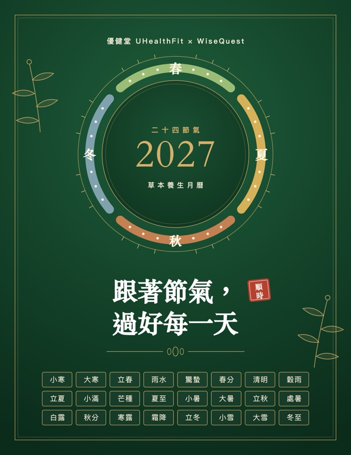

★★★★★購買品項：明目冷敷眼貼
眼貼感覺很好，只是運輸時間太長了

還沒用過草本眼貼，不確定自己喜不喜歡那種清涼感？體驗裝就是為這個準備的：和正裝同一款日本製冷敷眼貼，菊花、決明子、石斛、當歸等九味草本，加上帶來清涼感的冰片與薄荷，一袋 12 片，夠你在睡前用兩晚。先感受看看，再決定要不要入手正裝。
眼貼的九味草本，是中醫護眼古方裡常見的組合，三味一組：菊花、決明子、木賊草偏重「明目」，石斛、五味子、葛根偏重「滋潤」，川芎、當歸、黃耆偏重「調養」。貼在眼周肌膚上，在你休息的時候陪著疲勞的雙眼。貼上時的清涼感，則來自冰片與薄荷。

中醫傳統上用於清肝明目，是護眼配方中最常見的草本之一。
傳統上用於清肝明目，常與菊花搭配使用。
中醫傳統上用於明目，常見於護眼古方。

中醫傳統上用於養陰、滋潤。

經典的「五味」草本，傳統上用於生津。

傳統上用於生津，舒緩緊繃的感覺。
中醫傳統認為川芎能「上行頭目」，常見於頭面部的調養配方。

傳統上用於養血，是中醫最常用的調養草本之一。

傳統上用於日常調養，常與當歸搭配。
以上為中醫傳統觀點的說明，用於理解配方設計，不是醫療效果的宣稱。本品為外用保養品，不是藥品；首次使用請先做局部測試，孕婦請勿使用。
影片為使用方式示範；建議用量與注意事項，請以上方「用法與注意」為準。
★★★★★3.9 / 5 · 8 則評價
評價取自官方網站與官方商店的 Judge.me 評價，原文照登（簡體字保留原文），正面與負面評價一併呈現，不含品牌或代理商人員撰寫的評價。每則為個人使用感受，效果因人而異。
眼貼感覺很好，只是運輸時間太長了
很好的產品，用在穴位上即可
体验很好，清凉润眼，有rosemary的感觉。
感覺很好
还好效不明显
不知是否有任何問題，拆開信封袋內空無一物，並沒有任何東西可以試用的。
很好
good
是同一款眼貼、同樣的配方，日本製造。體驗裝一袋 12 片，約兩晚的用量；正裝 1 盒 60 片，約 10 晚。
每個家庭限購一份，僅限美國及加拿大的顧客購買，且不與其他優惠券或促銷活動疊加。
單獨訂購體驗裝免運。和其他產品一起購買時，依標準運費計算（眼貼美國滿 $79 免運）。完成付款後在訂單確認頁加購的商品，會和體驗裝合併出貨。
建議每晚 6 片，貼在內眼角、外眼角與下眼瞼下方。第一次使用可先從 2 片開始，並先在手臂內側做皮膚測試。
喜歡的話，可以接著選 1 盒（60 片，約 10 晚）或 3 盒一個月組；不適合也沒關係，體驗裝是單次購買，沒有訂閱，也不用辦取消。

睡前貼在眼周，草本透過肌膚緩緩釋放，讓長時間用眼後的雙眼在夜裡好好休息。不入眼、不含防腐劑，日本製造。
主要成分：菊花、決明子、石斛、木賊草、葛根、黃耆、川芎、當歸、五味子（九味草本）＋冰片、薄荷（清涼成分）


七種東方養目草本濃縮成膠囊，從營養與整體狀態支持眼睛；搭配眼貼，外內更完整。180 粒／約 1 個月。
主要成分：枸杞、菊花、決明子、山藥、茯苓、當歸、黃芪（七味）

每天一個小習慣、每個不到 5 分鐘。可列印的檢查表，加上 7 封每日短信。
免責聲明：本站所述膠囊類產品為膳食補充劑，乳霜、精華液與眼貼為日常保養用品，皆非藥品。相關敘述未經美國食品藥物管理局（FDA）評估；本產品不用於診斷、治療、治癒或預防任何疾病。「生產設施具 FDA 登記」指設施登記資訊，不代表 FDA 核准或背書任何產品。
These statements have not been evaluated by the Food and Drug Administration. These products are not intended to diagnose, treat, cure, or prevent any disease.
本站資訊僅供參考，不可取代醫師或其他專業醫療人員的建議；請勿依據本站內容自行診斷或處理任何健康問題。若有或疑似有任何健康問題，請諮詢你的醫療照護人員。使用者分享與買家評價皆為個人經驗，效果因人而異。孕婦、哺乳期、18 歲以下、服藥中或有慢性健康狀況者，使用前請先諮詢醫師。中醫相關敘述為傳統觀點的說明，非醫療診斷。部分情境圖片可能為示意圖；實際包裝可能與圖片略有差異。所有購買於官方商店完成，價格以結帳頁顯示為準。
每天一個小習慣、每個不到 5 分鐘。可列印的檢查表，加上 7 封每日短信。

12 個月、24 個節氣，每個節氣一句作息提醒、一道家常食材。可列印，貼在冰箱上。